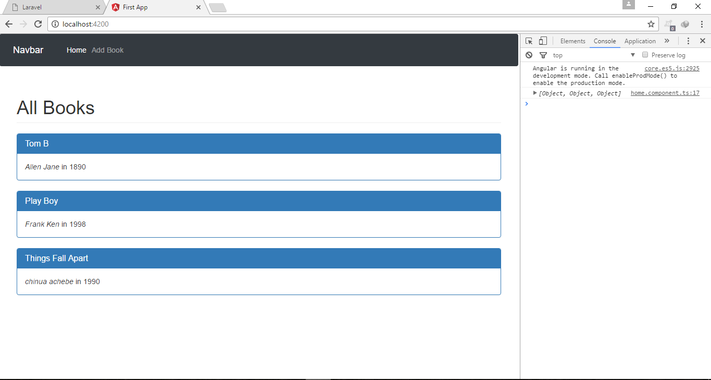
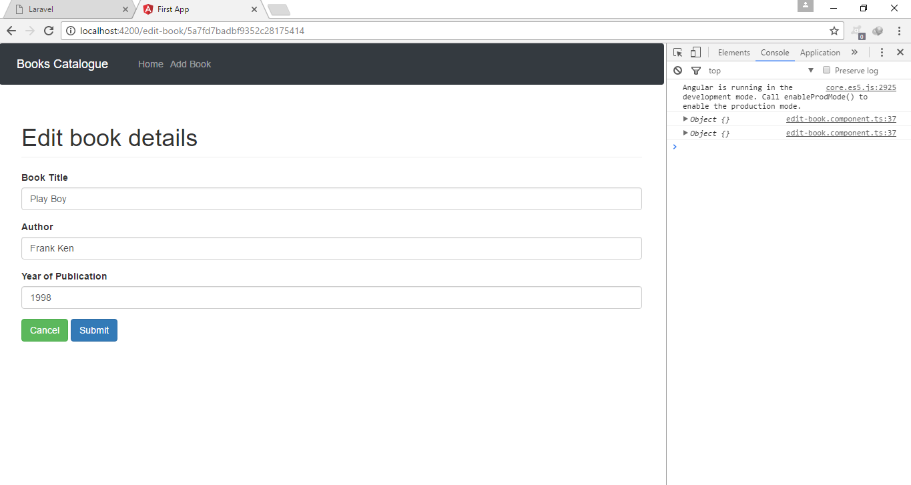

Reading Data
The Create, Read, Update and Delete are popularly know as CRUD Operations. Actually, we have implemented the Create logic in the previous page. Let us now see how we can read the data from the database. We are going to build from the backend.
Add a route to routes/books.js to fetch the records. The records will be returned in a json format
You can test the route with Postman before building the frontend. We'll add a method on the book.service.ts to get the data.
The list of books will be displayed in the homepage. Modify the home.component.ts to use the get function defined in the service.
We'll use bootstrap panel to display the content. Edit home.component.ts
Refresh the page. You should now see the books in the database.

Update Books
We'll create a page to update the books details. It is going to be similiar to the create page. The difference is that the form will be pre-populated with the values.
using the command line, change directory to client/src/app/components folder and run
Add it to the routes in the app-routing.module.ts
Add a button to the list of books to take us to the edit route. This will pass the id of the book to the route.
Modify the home.component.ts file to include such button
Notice how we pass the book id to the edit-book route. Save and it automatically reloads. When you click on the edit button, it should take you to the edit-book page passing the id in the url. Now, let's work on the edit-book component
edit-book.component.html
What we have above is a simple bootstrap form. The [(ngModel)] is used to bind the value in the input field to a value in the typescript class.
edit-book.component.ts
This time, we'll use the Template-driven approach for our form. So add FormsModule to the app.module.ts.
We'll need to go back to the backend and create the route to return the data based on the id. Add the route to routes/books.js
Obviously, the route will take the id of the book. find the book using the id and return a response. if the book is found, it is return in a json format.
Let us go back to the frontend service and add a function to make a request to the route above.
Add to the book.service.ts
We'll use this in the edit-book component but we also need a way to get the url so that we can snap the id from the url. That can be done with the ActivatedRoute class from the router class.
Modify the edit-book.component.ts
Click on the edit button, it should take you to the edit-book page and populates the input fields with the book details.

It's time to work on the submit button so that we can submit the changes to the database. As usual, we'll start building from the backend. Add the route below to the routes/books.js
Next step is to add a function to the book.service.ts in the frontend.
The final step is to use the function in the update function in the edit-book.component.ts
Now, you can create, read and update books in our database.
Deleting Data
Deleting data from the database is quite easy. As you can guess, we'll start working from the backend. Add a delete route to our routes/books.js
We have to add it to the book.service.ts in the frontend (angular).
Add the button to the home.component.html
Notice that we are passing in the book id. This will be passed to the delete route. notice that we have also added a div to display the message from the API. Now, add the onDelete() function to the class
home.component.ts
And that is it for this app guys! Hope you made it this far. Now, we have a MEAN Stack to manage books in a database.